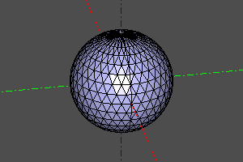
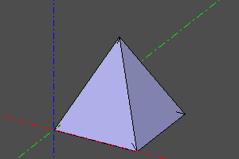

Триангуляция и меш
EXPERIMENTAL
Функции для работы с полигональным представлением.
Триангуляция
Построение полигональной сетки в формате (nodes, triangles), где pnts - массив точек, а triangles - массив 3-кортежей, индексов точек. Параметр deflection отвечает за разрешение разбиения.
Сигнатура:
nodes, triangles = triangulate(shp, deflection)
Пример:
m=sphere(10)
nodes, triangles = triangulate(m, 0.1)
print("count_of_nodes:", len(nodes))
print("count_of_triangles:", len(triangles))
print("first_five_nodes:", nodes[:5])
print("first_five_triangles:", triangles[:5])
#count_of_nodes: 699
#count_of_triangles: 1362
#first_five_nodes: [point3(0.000000,-0.000000,10.000000), point3(0.000000,-0.000000,10.000000), point3(0.000000,-0.000000,-10.000000), point3(1.950903,-0.000000,-9.807853), point3(3.826834,-0.000000,-9.238795)]
#first_five_triangles: [[237, 227, 200], [486, 482, 470], [237, 200, 211], [487, 472, 477], [238, 201, 212]]
Полигедрон
Объёмное тело, состоящее из плоских граней, заданное точками вершин pnts и массивом кортежей индексов точек, задающих грани.
Сигнатура:
polyhedron(pnts, faces, shell=False)
Пример:
m=sphere(10)
nodes, triangles = triangulate(m, 0.1)
disp(polyhedron(nodes, triangles))

Выпуклая оболочка
Построение выпуклой оболочки множества точек. Используется процедура scipy.spatial.ConvexHull
convexhull_ вычисляет массив индексов точек полигонов выпуклой оболочки. convexhullshape строит выпуклую оболочку, используя процедуру polyhedron.
Опции: incremental и qhulloptions_ являются опциями scipy.spatial.ConvexHull (см. документацию scipy). shell - создать оболочку вместо тела.
Сигнатура:
convex_hull(pnts, incremental=False, qhull_options=None)
convex_hull_shape(pnts, shell=False, incremental=False, qhull_options=None)
Пример:
pnts = points([
(0,0,0),
(1,0,0),
(1,1,0),
(0,1,0),
(0.5,0.5,1),
])
print(convex_hull(pnts))
disp(convex_hull_shape(pnts))
